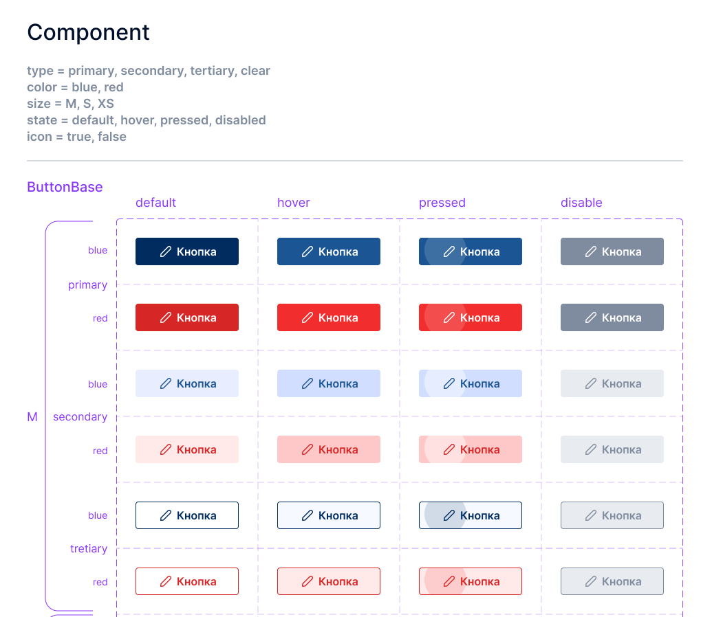
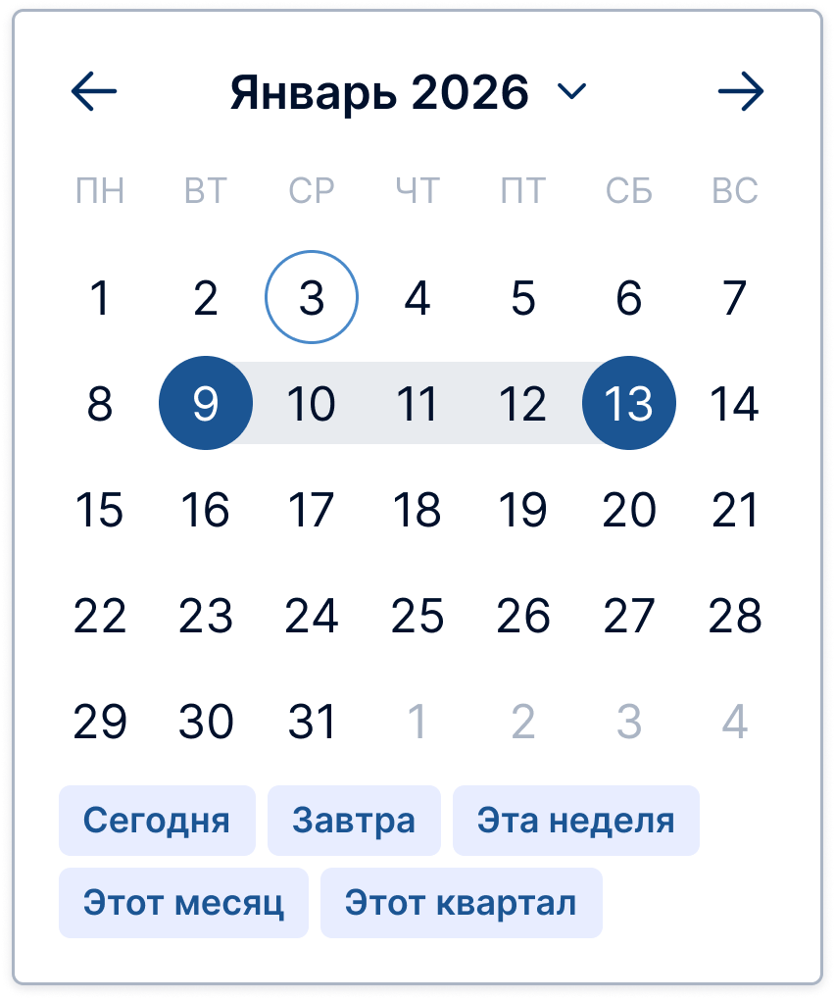

Дизайн-система ServiceVizor
В ServiceVizor технические специалисты составляют инструкции, планируют работы и следят за их выполнением. Я собрала библиотеку компонентов для этих интерфейсов и описала их поведение, чтобы дизайнер и разработчик могли свериться с одним правилом.
Моя роль

Как устроена библиотека
Редактор инструкций, таблица заданий и диаграмма Ганта устроены по-разному. Общими я сделала цвета, типографику, отступы и скругления. Когда решение повторялось в нескольких местах, я выносила его в библиотеку. Так появились паттерны таблиц, форм в диалогах и пустых состояний.
У поля ввода и формы разные задачи
В компонентах Input я описала ввод и выбор значения. FormField объединяет подпись, сам инпут и пояснение. Контекст и проверка значения зависят от конкретной формы. Благодаря такому разделению одно поле можно использовать и в форме редактирования, и в фильтре таблицы.
Как выбрать кнопку
Для ButtonBase я разделила визуальный приоритет и смысл действия. Например, удаление может быть второстепенным действием: кнопка останется красной, но получит меньший визуальный вес. Размер, наличие иконки и состояния задаются отдельно.

Что входит в спецификацию
В планировании и аналитике пользователи работают с несколькими досками. Для переключения между ними я собрала панель TabbarHeader из вкладок TabHeader. В спецификации разобрала, что происходит, пока у доски ещё нет имени, и как ведёт себя вкладка с длинным названием.

Если название обрезалось, при наведении появляется подсказка с полным текстом. Для кнопки меню внутри той же вкладки я описала отдельное поведение: наведение подсвечивает кнопку, а подсказка с названием доски остаётся скрытой.
Один календарь для даты и периода
В прежнем календаре нельзя было ввести дату вручную. При выборе периода было трудно понять, какие дни попадут в диапазон. В новой версии я предусмотрела ручной ввод и разделила выбор одной даты и периода. После выбора начала диапазона наведение подсвечивает промежуточные дни.


Для частых запросов я добавила относительные периоды. Например, «Этот квартал» рассчитывается от текущей даты. Прежний календарь в работе · Новый календарь в работе
Как команда работала с системой
Изначально все макеты лежали в одном файле. Я разделила их по модулям продукта, а библиотеки для веба и планшета вынесла в отдельные файлы. В каждом модуле отвела страницу под ревью реализации.

Как выглядело дизайн-ревью
В Jira появился отдельный этап проверки перед релизом. Для каждого расхождения я фиксировала приоритет, прикладывала экран и описывала ожидаемое поведение. Например, в таблице пользователей индикатор показывал сортировку по ФИО, хотя строки шли не по алфавиту. На ревью я указала разработчику, что индикатор должен соответствовать фактическому порядку строк.